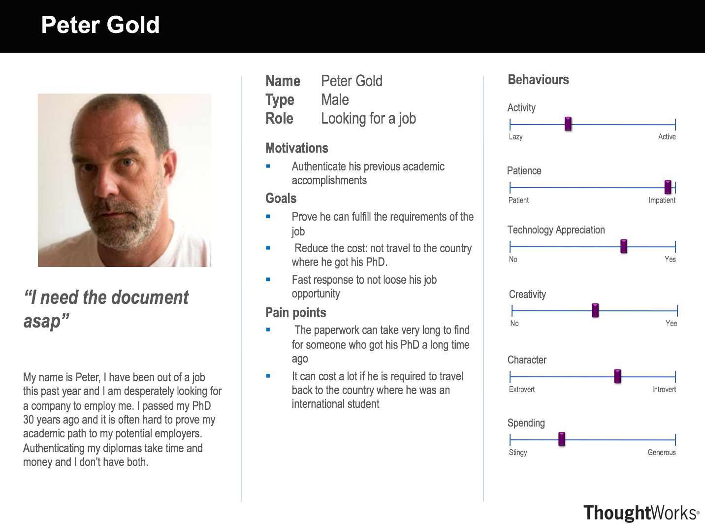
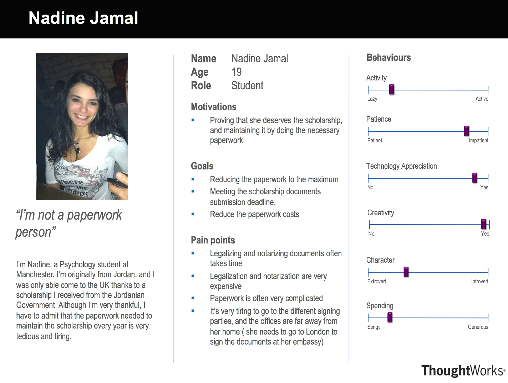
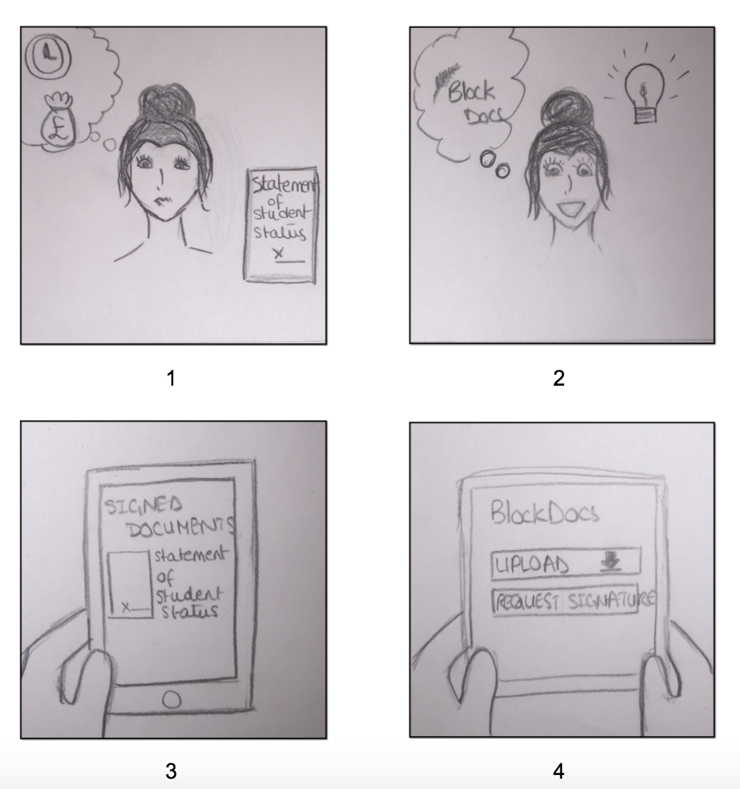

Requirements
a. Background of the project
Our project is based on the following question: what other applications or processes can be greatly improved by the implementation of a Blockchain? After an intensive brainstorming period in which we came up with and reviewed different ideas, our team has settled upon one single idea which our client approved and appeared to be fond of.
The notarisation and legalisation of a document can require vast amounts of paperwork, effort and most importantly, time. Taking the same exact document through a whole chain of tertiary parties is not only counterproductive, but it can also be avoided entirely through a blockchain based authentication system.
Many Stamps
Time
Money
b. The clients
Atos is one of the biggest actors in the digital services companies worldwide. Its turnover in 2015 was of 11 billion euros and employs approximately 100 000 employees in 72 countries including France where Atos is the principal secure online payment service provider for businesses via its worldwide subsidiary company. The group is the Cloud leader in Europe.
The activities at Atos focus on four principal jobs:
- Consulting & Technology Services & Systems Integration
- Outsourcing
- Transactional services (including payment on the Internet) affiliated with Worldline
- Cloud, big data and cybersecurity
The group is the global partner of the Olympic games since 1992 and counts among its clients large international accounts in all sectors of activity.
c. Problem statement
Notarising and legalising documents can be tedious. Very often, documents that are issued in a country and are required to be used in another one require to pass through a long chain of stamps and signatures, including those of a Notary Public, the Ministry of Foreign Affairs, and the respective embassy.
We can establish an analogy between verifying the authenticity of the document and verifying bitcoin transactions or ethereum smart contracts. If the blockchain can help in solving the second problem, then it can also eventually help in fixing the first one. In fact, our application makes it possible to upload both the reference to a document and its signatures to the blockchain.
d. Requirement gathering
To gather requirements, we first explored Blockchains possible fields of application. Once we were satisfied with our idea, we listed out a set of requirements based on how the current notarisation process is functioning. With the help of our client and through the interviews we have taken, we managed to validate that set of requirements and structure it by the MoSCoW standards. Furthermore, we also envisioned personas and sketched out storyboards to help both us and our client to better understand our ideas.
e. Personas
 
f. Storyboard and Scenario
One of the scenarios we wrote is the following:
1-Nadine has a scholarship at UCL and receives funds from the Jordanian government. She needs to authenticate her student of statement status by asking UCL to sign the paper. However, the process is not that simple and she has to go through many steps before receiving any funds. It is expensive and takes too long.
2-However, Nadine has an idea. She decides to use BlockDocs to make the process quicker and easier.
3-She uploads her student of statement status to the website and sends a signature request to UCL.
4-After UCL signs the document she can send it to the Jordanian government that can be sure that the document is authentic.
g. MoSCoW
Because of the disruptive and challenging nature of our project, as well as the very general brief we got at the beginning of the year, our requirements took a lot of time to become clear. However, we believe they now describe the general behaviour of the software we want to build.
must
- Be able to upload a document (a hasht to it) to the blockchain
- Be able to somehow sign documents on the blockchain (with an abstraction of transactions for example)
- Be able to verify the signatures of the document
- User authentication with usernames and passwords
should
- Have two user interfaces: one for the regular users who want their documents authenticated, the other for institutions who have the power to legalise documents
- Documents can be signed by more than one person
- Very smooth and easy navigation
could
- Open the API to a developer community, such that anyone who comes up with a future requirement could also have access to these documents (open source project)
- Automatically implement a piece of code (e.g. release funds) once a document is legalised / signed
won't
- Only predetermined institutions can legalise documents (it's hard to verify their identity otherwise)